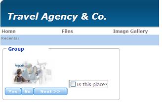

The Image control lets you enhance your Web Forms (user front-end). You can put images inside other controls such as grids, groups, etc. Images are objects embedded in a GeneXus Knowledge Base. In addition, you can also import and export images between Knowledge Bases.  To add an image to the selected location (or just to the Web Form), drag one from the toolbox image icon into the desired location. In the image above you can see an image inserted in a Group control with other objects such as buttons and a check box. Then, you can choose the image from the windows dialog box.
In the image above we added another image to the left of the previous one, and assigned the specific file from the Knowledge Base image repository.
|
| Backlinks | |||
| Category:Common Controls | |||
| Drag event in Web | Drop event in Web | Category:Embedded | Category:Free Style Grid control |
| Image property | Scale Type Property | ||
| Web Panel form |